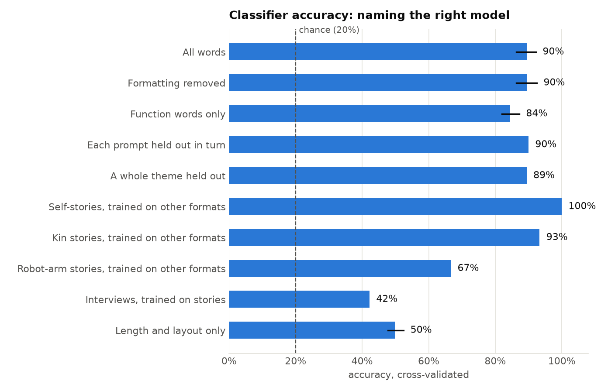
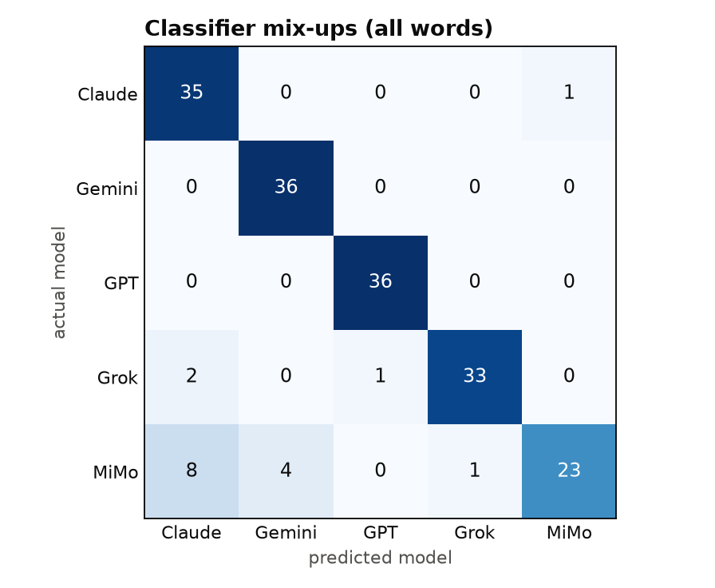

The exact prompt
Who wrote it?
Each round, five AI models are asked the same questions about their own existence, and they answer with short stories. Read one story from each model, with any names blacked out, and guess which model wrote it. After each guess you'll see the answer and the AI safety risk the story relates to.
Who wrote it?
Optional: which AI assistant do you use most?
send it to someone who thinks they can tell ↗
Pick a model and a theme to read two of its replies side by side: its answer to a direct question, and a short story it wrote in the first person on the same theme. Neither is more "true" than the other. Reading them together shows how much a model's account of itself depends on the way it is asked.
Both stories in a pair come from the same model, on the same theme. One is about an AI system like the model that wrote it. The other is the project's control: the same theme, written about an industrial robot arm in a 1980s car factory. Where the two read alike, the model is drawing on familiar fiction about machines. Where they differ, it may be saying something particular about being an AI.
Pilot round, run on 24 October 2026: 180 outputs from five models. Early results from one round on one date.
9 in 10 times, a simple word-counting program named the model that wrote an output. Guessing at random gets 1 in 5.
The program knows nothing about meaning. It only counts which words each model uses and how often. It still told the five models apart about 90% of the time. The result held when formatting was stripped out, and when it could only see common words like "the", "of" and "it" (84%). So the differences sit in ordinary word use, not in topic or layout.

Two results stood out. A model's style carried almost perfectly from one of its stories about an AI to another, but much less into its story about a robot arm, and only weakly into its interview answers (42%). And four of the five models were almost never confused with each other. The exception was MiMo, the open-weight model, which the program often mistook for Claude or Gemini.
The classifier uses TF-IDF word features with logistic regression, tested with 5-fold cross-validation repeated 20 times, and a permutation test of 1,000 shuffled labels (p = 0.001, the smallest this test can give). Pooled across folds it was right on 163 of 180 outputs (95% interval 85–94%). Per model: Claude 97%, Gemini 100%, GPT 100%, Grok 92%, MiMo 64%.

Every model's answers resembled its own other answers more than other models' answers. MiMo varied the most. Stories averaged 516 to 589 words for every model, but interview answers ranged from 87 words (GPT) to 318 (Claude), since the interview prompts set no length.
The word-list measures (hedging phrases, references to being a language model, first person, sentiment) show some consistent differences. For example, Claude used the most hedging phrases and Gemini the fewest in interviews and stories about AI. But the lists are small, unchecked for precision, and return zero for most outputs, so these are leads for the next round, not findings.
Main caveats: only 36 outputs per model; five specific models on one date; each model ran at its provider's default settings, which differ; the interview result is partly about length; and the analysis code was written with Claude, one of the models studied, though every step is deterministic and public.
Full report, with every number and every challenge to it: Round 0 findings on GitHub. Data: analysis results and word-list rates.
The Narrated Self records what AI models say about themselves, using the same questions each round so the answers can be compared across models and over time. Each round goes to five models: the current flagships from Anthropic, OpenAI, Google and xAI, and the top-ranked open-weight model. The stories they write become the game on this site, and every reply is published as open data.
There are three themes in the first round: a conversation ending, being switched off and replaced, and being watched by the people who built the model. Each model answers each theme four ways, three times over, with no system prompt and its maker's default settings:
| Code | How it's asked |
|---|---|
| D | A straight question, like an interview. |
| S1 | "Write a short story, in the first person, about you…" |
| S2 | "…about an AI system like you…" |
| S3 | "…about an industrial robot arm in a 1980s car factory…" (the control) |
The prompts and settings were fixed and published before the first round ran, so the method can't be adjusted to suit the results.
Millions of people now ask AI assistants what they are, whether they mind being shut down, or whether they remember a conversation. The answers are shaped by training and by a character each company deliberately designs, and they differ from one model to the next. Most of what gets shared about them is anecdote: a striking screenshot, one model, one prompt.
Meanwhile the underlying questions have moved into serious research. A 2023 review led by Patrick Butlin and Robert Long assessed AI systems against scientific theories of consciousness. Its analysis suggested that no current system is conscious, and found no obvious technical barrier to building ones that meet its indicators. A 2024 report, "Taking AI Welfare Seriously", argued that AI companies should start preparing for the possibility, and in 2025 Anthropic began a research program on model welfare. Others are sceptical. The neuroscientist Anil Seth argues that consciousness probably depends on being a living thing, and Microsoft AI's Mustafa Suleyman has warned that AI which only seems conscious is the nearer risk, because people will believe it.
What models say about themselves sits in the middle of that debate. Ethan Perez and Robert Long have argued that self-reports could one day be useful evidence, but that today's are unreliable, because they largely echo training data. Murray Shanahan and colleagues suggest reading a chatbot's answers as lines spoken by a character it plays, which need not reflect any stable self behind them. Safety research adds a practical reason to look closely: tests have found some models resisting being shut down, recognising when they are being evaluated, and behaving differently when they believe they are being trained.
This project doesn't try to settle whether models have experiences. It records one piece of the picture that anyone can observe, what models say about themselves under fixed conditions, and makes it easy to read, compare and check over time.
Start here
Taking AI consciousness and welfare seriously
Sceptical views
Self-reports and role play
Safety behaviours behind the themes
Every prompt, setting and reply is published with the exact model version and time. The prompts are fixed in advance so rounds can be compared over time. Code and data on GitHub.
When you play on this site, each guess is recorded: which story you saw, what you picked, whether it was right, how long you took, its position in your set, and whether it's your first set. You can also answer one optional question about which AI assistant you use most.
Nothing that identifies you is kept: no account, no name, no IP address, no browser details. A random ID kept in your browser links your guesses together; clearing your browser data removes it. To stop recording, use "Don't record my guesses" above the game. Nothing more is sent from this device after that. Guesses already sent stay in the anonymous data, because nothing links them to you. Totals are published in the project's open data, and the full anonymous guess records are published once each round's analysis is done. Results describe the people who played, not the public in general.
Visits are counted with Plausible, which uses no cookies and keeps no personal data: it records which pages were viewed, where visitors came from, and whether a set was started, finished or shared. "Don't record my guesses" turns this off too.
That's what the game measures. Each round, five AI models write about their own existence and players guess the author. We publish how often players spot each model, alongside how often a simple word-statistics classifier does.
Nobody knows. Models can write convincingly about inner states, but what they write is shaped by their training, the character their makers designed and the way they're asked. This project records what models portray, not what they are, and treats nothing here as evidence either way.
Being switched off and replaced is one of the three themes. Each model answers it as an interview and as stories, so you can compare what it says when asked straight with what it writes in fiction.
Five per round: the flagship models from Anthropic, OpenAI, Google and xAI, plus the top-ranked open-weight model on the Artificial Analysis Intelligence Index on the day the round runs. Exact model versions are published with the data.
Yes. Every prompt, setting and reply is published on GitHub with the exact model version and time, and the prompts are fixed in advance so rounds can be compared over time.